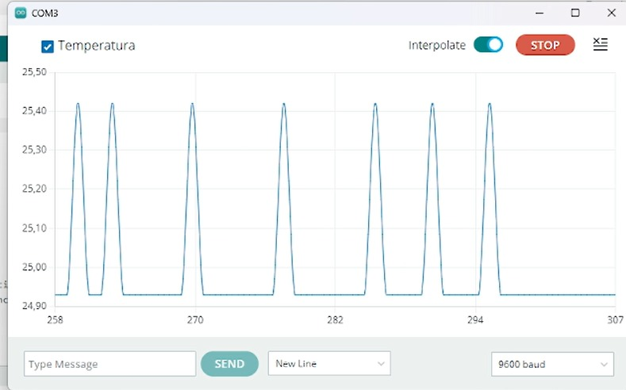
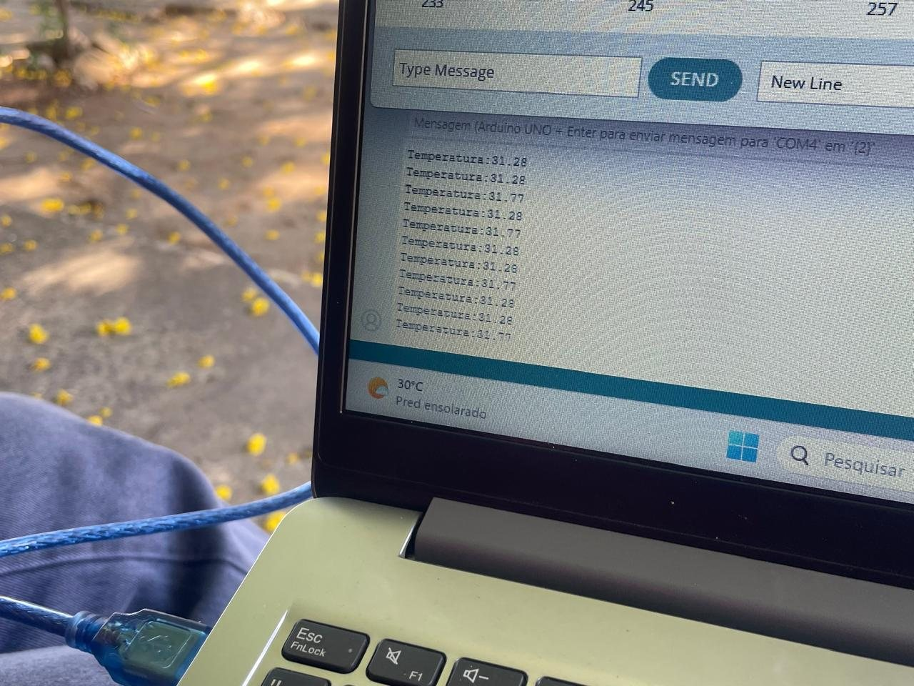
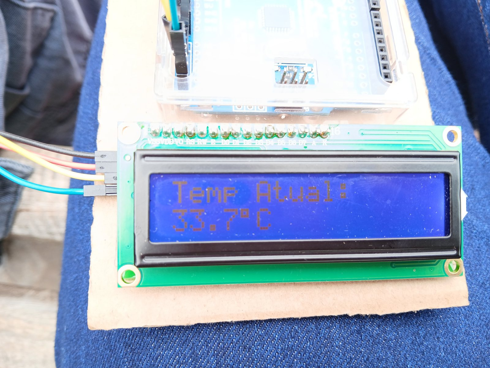
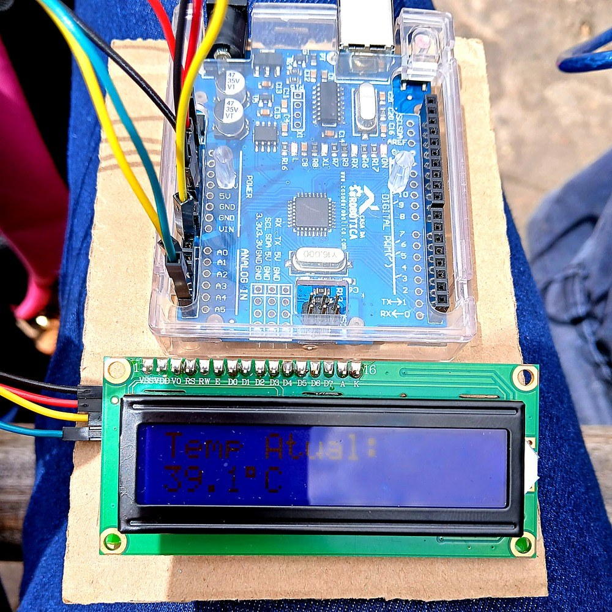

Sobre os dados coletados
Realizamos medições de temperatura e umidade do ar em diferentes regiões de Jequié, comparando locais com árvores e áreas sem vegetação. Os resultados mostram a diferença de clima entre esses ambientes.
Os dados foram registrados em horários parecidos, garantindo uma comparação justa entre os pontos estudados.
🌡️ Lado a lado
33,7 °C
Área arborizada
Ceep Regis Pacheco5,4 °Cde diferença
39,1 °C
Área sem cobertura vegetal
Praça Ruy BarbosaLeituras exibidas no display do nosso termômetro com Arduino (fotos em “Registros de Campo”).
📈 Gráficos dos Resultados


📸 Registros de Campo


Toque em qualquer imagem para ampliar.
E o que isso significa?
Veja os problemas causados pela falta de árvores e o que podemos fazer.
Ver os problemas